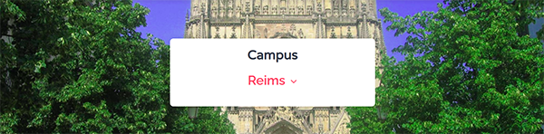

Apprendre un métier tech avec passion !
La Wild Code School est une école innovante et un réseau européen de campus qui forment aux métiers tech des spécialistes adaptables.

Wild Code School
Apprendre un métier tech avec passion !
La Wild Code School est une école innovante et un réseau européen de campus qui forment aux métiers tech des spécialistes adaptables.